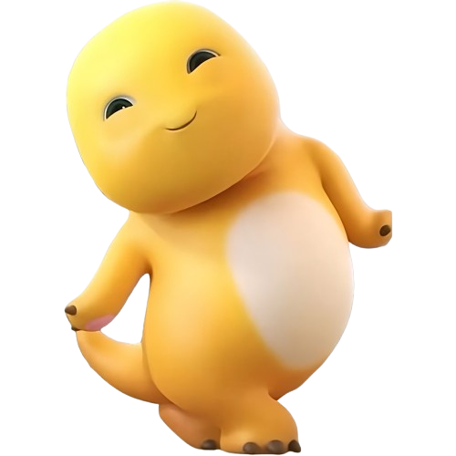

Tekan Kadonya dong ayang!😋

Click to Continue ▼
Harapanku di momen istimewa ini adalah semoga kita bisa tetap bersama dan selalu memiliki tujuan yang sama, bareng bareng terus ya ayangggg, wopyuu <3
- 09 Oktober 2026 -